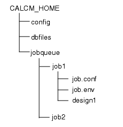
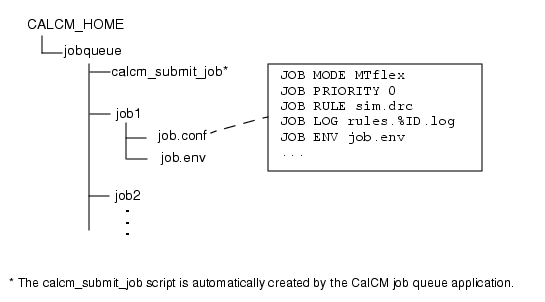
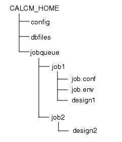

The following
procedure describes how to create job configuration files for Calibre
jobs you want to run under CalCM.
Prerequisites
You
will need to know information for configuring the job, such as the
mode (MT, Calibre MTflex), rule file, and number of remotes.
Procedure
- Place a design in the job1 directory
as shown in Figure 1.
Figure 1. CalCM Directory Structure
- Create a job configuration
file (job.conf) in the job1 directory.
- Define the CalCM job statements
as needed for your environment, being sure to replace the strings
shown in italics with your specific job and environment information.
JOB MODE mode //The mode for running the SVRF rule file
JOB PRIORITY number //The priority for this job
JOB RULE rule_file //Rule file used for this job
JOB LOG log_file //Log file captures results of job operations
JOB ENV env_file //Environment file for this job
REMOTE MAX number //Maximum of remotes for this job
JOB USER username //User running this job
Refer
to the “CalCM Job Configuration File Reference” for information on the statements
used in the job configuration file.
Figure 2. Example CalCM Job
Configuration File
- Save and close the file.
- Optional: You can create a
job environment file in the job1 directory
and define OPC-related variables that are specific to job1. For
example, for an OPC job you can define OPC-related variables in
this file.
setenv MGC_HOME <path_to_MGC_HOME>
setenv OUT_ERROR:out.err
setenv OUT_OASIS:out.oas
If
you create this file, you should define the JOB ENV statement in
step 2 to point to this file.
- Place a design in the job2 directory
as shown in Figure 3.
Figure 3. CalCM Directory Structure
- Create a job configuration
file (job.conf) in the job2 directory.
- Define the CalCM job statements
as needed for your environment, being sure to replace the strings
shown in italics with the correct information.
JOB MODE mode
JOB PRIORITY number
JOB RULE rule_file
JOB LOG log_file
JOB ENV env_file
REMOTE MAX number //Maximum of remotes for this job
JOB USER username //User running this job
- Save and close the file.
- Optional: You can create a
job environment file in the job2 directory
and define OPC-related variables that are specific to job2. If you
create this file, you should define the JOB ENV statement in step 5 to point to this
file.
Results
You now have two jobs, job1 and job2,
that are configured to run under CalCM.